Grandmaster Pan Yue
The YiZungYue school of martial arts, which has generated a shock wave in the martial arts circles of Taiwan and Japan and is continuously receiving increasing attention from the rest of the world, was founded by Grandmaster Pan Yue in Taipei, Taiwan.
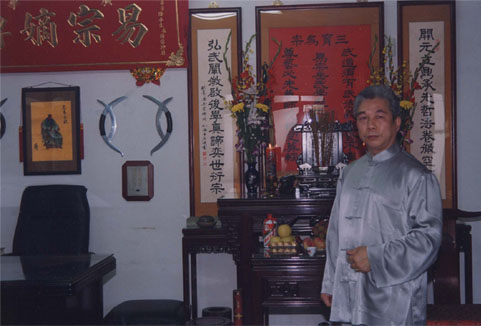Grandmaster Pan Yue
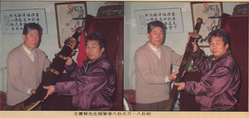Grandmaster Pan received the gifts - Ba Gua broad-sword and straight-sword - from his teacher Grandmaster Wang Su-Sheng
Grandmaster Pan was born in 1946. He holds the direct linage of "YiZung of Taiwan" founded by Grandmaster Zhang Jun-Feng and the Tianjin "Cheng Ting-Wha school Gao Yi-Sheng style" Ba Gua system founded by Grandmaster Liu Feng-Tsai. In order to pursue the genuine and utmost Chinese internal martial arts, he has traveled in China and stayed in more than ten provinces to visit the internal arts masters to collect information, and increase knowledge and combat experiences. In 1992, after years of research, he solved the mysteries of Chinese internal martial arts and discovered a systematic and revolutionary approach to developing the so called "Pre-Heaven Power" (or Sian Tian Jin) potentially inherent in a human body to create the explosive power delivery in internal styles.
 Grandmaster Liu Feng-Tsai
Grandmaster Liu Feng-Tsai
In his proposed martial arts, the Pre-Heaven Power Method, the basic fajin (exerting force) technique starts from squeezing the ground and propagates the reaction force through the spine and back to reach the hands. The basic training includes a series of standing stake method such as “lifting the sky stance”, “taming the earth stance”, and "swallow flipping stance".
 Lifting the sky, Taming the earth, and Swallow flipping standing stakes
Lifting the sky, Taming the earth, and Swallow flipping standing stakes
") Downward fajin by Master Pan
Downward fajin by Master Pan
 Upward fajin by Grandmaster Pan
Upward fajin by Grandmaster Pan
The formal announcement of this significant and important discovery on July 13, 1997, has attracted media attention and was endorsed by many well-known old generation martial arts masters in Taiwan. During the period of 1994 to 1999, the Japan Chinese Martial Arts Association has sent many teams to visit Grandmaster Pan and was extremely impressed by his achievement.
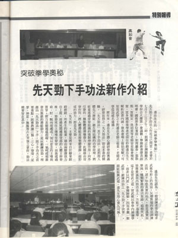Announcement of the discovery of the Pre-Heaven Power Method (Vigor & Beauty Monthly, 87, July 15, 1997, p. 22)
 from Prof. Kang Ge-Wu to Grandmaster Pan") A tablet (with words: Deeply understand martial arts) from Prof. Kang Ge-Wu to Grandmaster Pan
A tablet (with words: Deeply understand martial arts) from Prof. Kang Ge-Wu to Grandmaster Pan
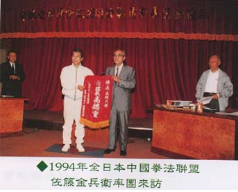Photo of Grandmaster Pan with the visitors from Japan in 1994
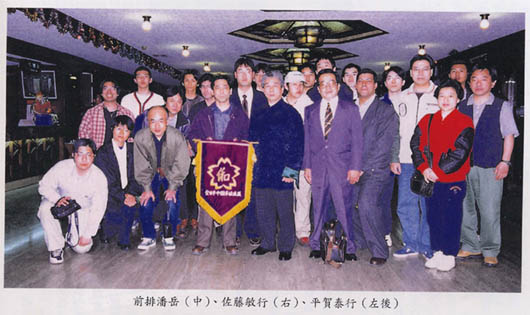Photo of Grandmaster Pan with the visitors from Japan in 1999
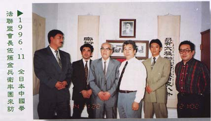Photo of Grandmaster Pan with the visitors from Japan in 1996
In an article published in the 1999 Summer issue of the Journal of Martial Arts, the visitors described the shock when they viewed people flying away after contacting Grandmaster Pan and they could hardly see any movement from Grandmaster Pan. In an article published in the Journal of Taiwan Wu Lin (Feb., 2000), the author Prof. Lin Zhao-Tian recognized the significance of this breakthrough and thought that this discovery would elevate the Chinese martial arts to a new era - the era of whole body integrated Jin - after the previous two eras, i.e., the era of external style and the era of internal style. Although some internal martial artists in the past have demonstrated similar kind of power occasionally, the art is considered lost, let alone the knowledge of how to develop it in a systematic and comprehensive way. The discovery by Grandmaster Pan shed the light toward this avenue. Since he developed this technique from scratch, he understands the training process needed to acquire this skill. And more importantly, he knows how to pass down this knowledge to his students. As a matter of fact, all his students, after a certain period of training, more or less possess this basic skill. This makes this event different and hence more significant than any other in the history of Chinese martial arts.
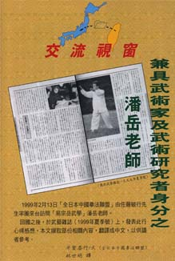An article on Grandmaster Pan in the Japanese journal of Martial Arts, Summer issue, 1999
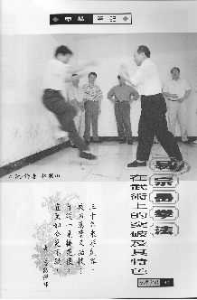A article on Prof. Zhao-Tian Lin's fajin demonstration (Taiwan Wu-Lin, Spring 2000, pp. 40-46)
Grandmaster Pan has published three books (in Chinese): "In Search of Chinese Internal Martial Arts", "Solving Martial Arts Mysteries - A Breakthrough", and "The Method of Era Opening Pre-heaven Power". The publisher for the books is the Yi-Wen Publishing Company, Taipei, Taiwan. The English translation of the book entitled "Solving Martial Arts Mysteries - A Breakthrough" was published by the American YiZungYue Internal Martial Arts Association in 2010. You can click here to purchase it online.
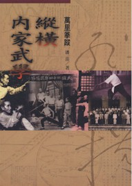"In Search of Chinese Martial Arts" (1996)
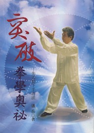"A Breakthrough towards Solving the Mysteries of Martial Arts" (2000)
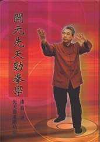"Method of Era Opening Pre-Heaven Power" (2001)